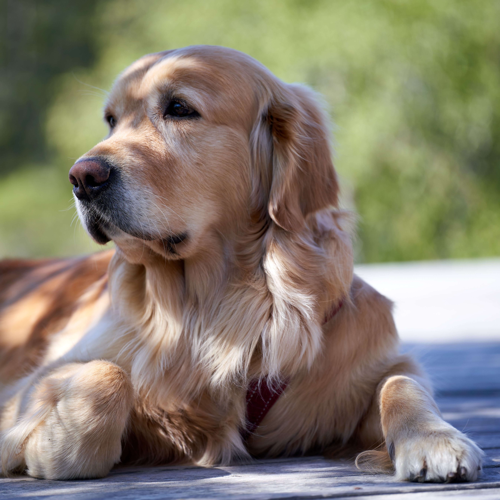
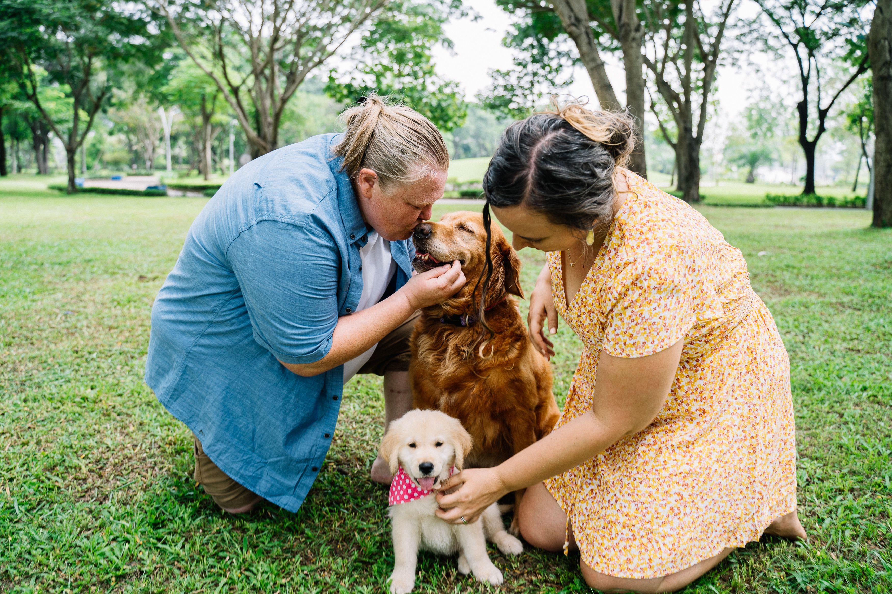
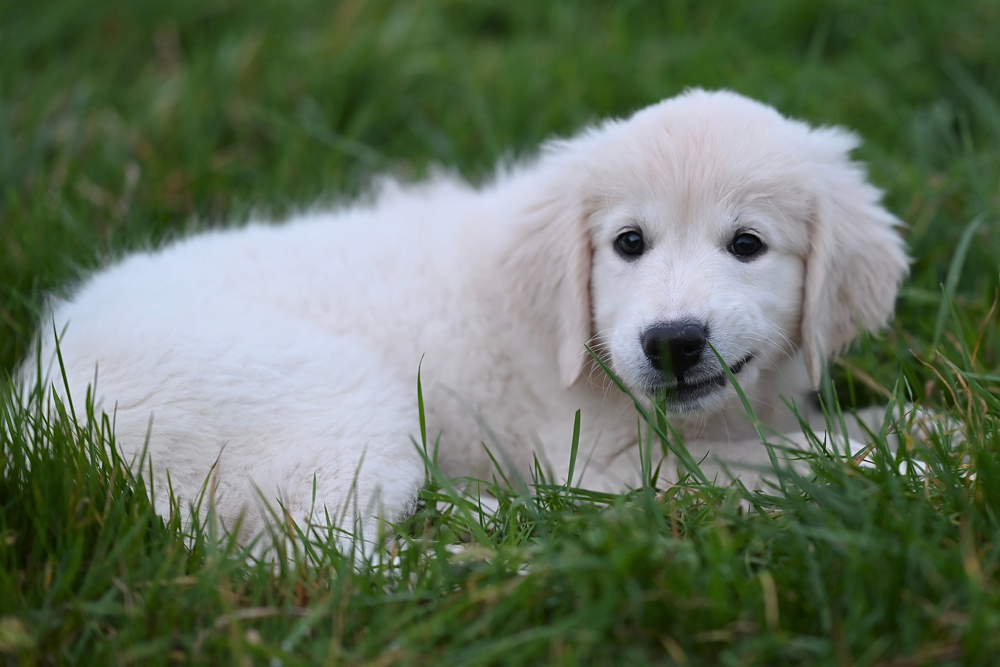
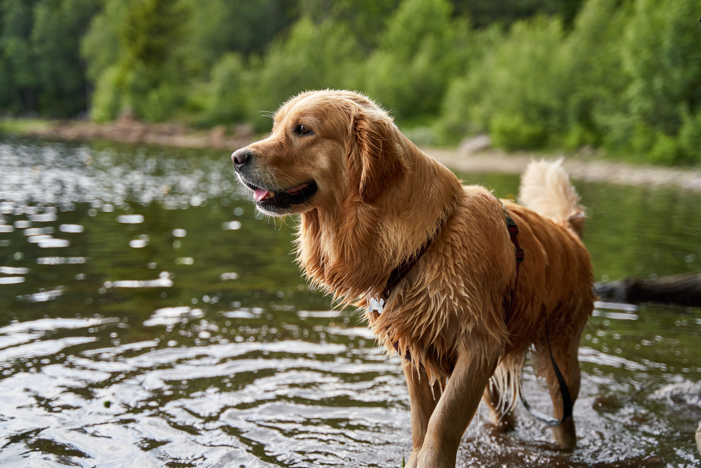

Золотистый ретривер
Добродушный и улыбчивый компаньон с золотистой шубой. Одна из самых дружелюбных и преданных пород, особенно нежная с детьми и совсем не годная в охранники.

- Вес
- 29–34 кг
- Рост в холке
- 56–61 см
- Жизнь
- 10–12 лет
- Энергия
- Высокая
- Линька
- Сильная
Характер
Золотистый ретривер был выведен в Великобритании в девятнадцатом веке как охотничья собака, которая находила и приносила подстреленную дичь, часто из воды. От этой работы ему достались выносливость, любовь к воде и мягкая хватка, а главное, глубокая ориентированность на человека. Это добродушная, преданная и улыбчивая собака, для которой нет большего счастья, чем быть рядом со своей семьёй и чувствовать себя полезной.
С людьми и животными голден ладит просто прекрасно. Он не знает слова «чужой» и одинаково радушен к детям, гостям, другим собакам и даже кошкам, поэтому на роль охранника совершенно не годится. Его дружелюбие настолько велико, что агрессия почти не свойственна породе.
Стоит знать и о других особенностях характера. Голден умён и охотно учится, он искренне хочет угодить хозяину, что делает дрессировку лёгкой и приятной даже для новичка. При этом он остаётся подвижным и игривым по-щенячьи до самой старости, любит апортировать и обожает воду в любом виде, от озера до обычной лужи.
Есть у ретривера и важная черта характера. Он очень привязчив и тяжело переносит одиночество, поэтому ему нужен дом, где он будет полноценным участником жизни, а не сторонним наблюдателем.
Характеристики
Размер
Крупная, гармонично сложенная собака. Кобели весят примерно от 29 до 34 килограммов при росте 56–61 сантиметр в холке, суки легче и ниже.
Шерсть
Густая, прямая или волнистая, с плотным водоотталкивающим подшёрстком. Линяет обильно и круглый год, поэтому регулярное вычёсывание обязательно.
Энергия
Высокая. Голдену нужны долгие активные прогулки, игры и нагрузка, особенно полезны игры с апортировкой и плавание.
Обучаемость
Очень высокая. Это одна из самых способных и послушных пород, идеально подходящая начинающим владельцам.
Отношение к детям
Прекрасное. Голден терпелив, нежен и игрив с детьми, его часто называют идеальной семейной собакой.
Здоровье
Золотистый ретривер дружелюбен и крепок внешне, но у породы есть серьёзные наследственные слабые места, о которых нужно знать заранее. Здоровью родительской линии при выборе щенка стоит уделить особое внимание.
Онкология
Главная и самая тяжёлая проблема породы. Голдены входят в число собак с наиболее высоким риском рака, и регулярные осмотры у врача помогают выявить болезнь как можно раньше.
Дисплазия суставов
Тазобедренные и локтевые суставы у крупной породы под большой нагрузкой. Риск снижают контроль веса и проверка родителей по тестам.
Болезни глаз
Прогрессирующая атрофия сетчатки и катаракта встречаются в породе чаще среднего. Нужны регулярные осмотры у офтальмолога.
Окрасы
Золотистый ретривер бывает всех оттенков золотистого, от светлого кремового до насыщенного тёмно-золотого. Очёсы на лапах, хвосте и животе часто немного светлее основного тона, а небольшое белое пятнышко на груди допускается.

Эти оттенки выделяют у трёх типов породы: английского (светлого), а также американского и канадского (более тёмных).
Кому подходит
Золотистый ретривер станет прекрасным выбором для семьи или активного человека, который любит прогулки, спорт и проводит с собакой много времени. Эта порода создана для общения и расцветает там, где её окружают вниманием и совместными занятиями.
Сложно с голденом придётся тем, кто подолгу отсутствует дома, не готов к обильной линьке и постоянному уходу за шерстью или ищет охранника. Без общества и движения эта общительная собака начинает скучать и грустить.
Голден в жизни


